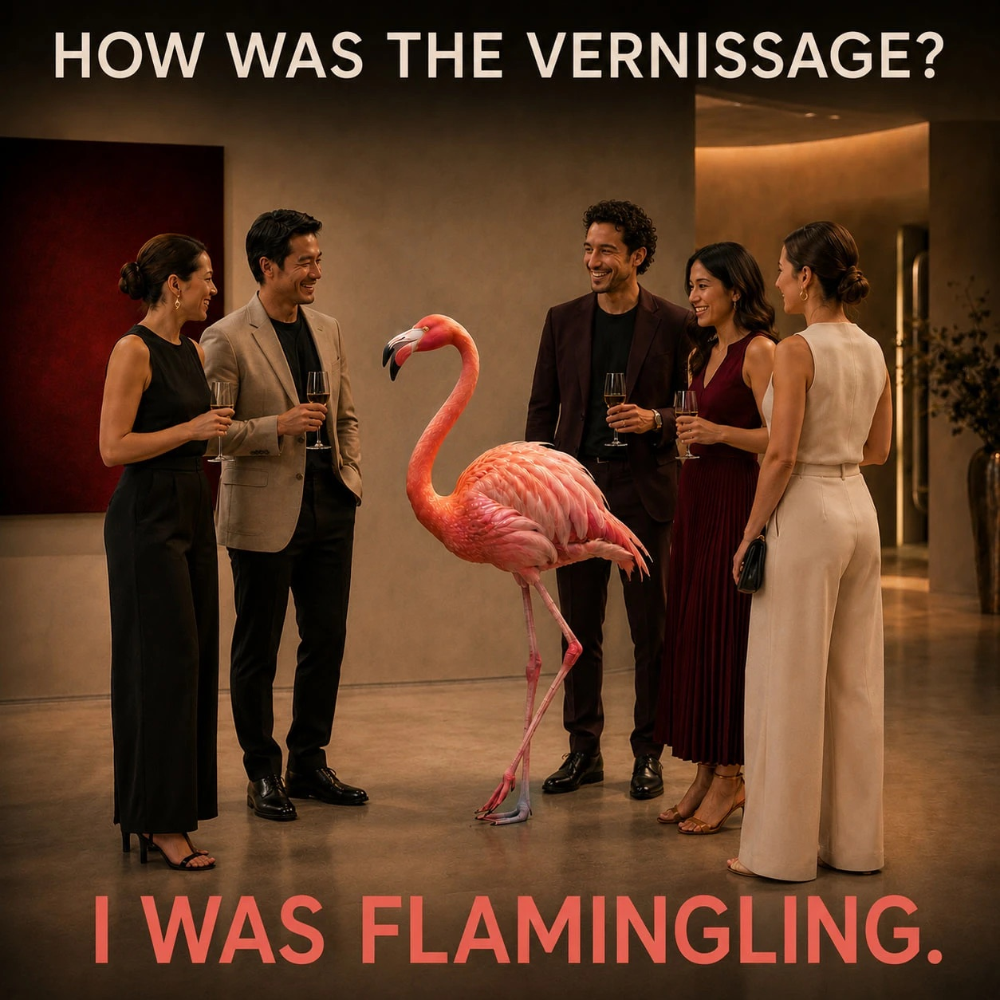

Word of the day 25 August 2026
verb, present participle — from to flamingle coined here
fluh-MING-ling
Mingling with the plumage on: attending an opening for the standing-about rather than the art — conspicuously present, decorative, one-legged, doing very little, and doing it beautifully.

“How was the vernissage?” — “I was flamingling.”
Etymologyflamingo (Portuguese flamengo, ultimately Provençal flamenc, 'flame-coloured') + mingle (frequentative of Middle English mengen, 'to mix'). The two words are welded at /mɪŋɡ/, a string both of them already own.
NoteThis is the rarest join in the collection: the seam costs nothing. flamingo is fla-MING-o, mingle is MING-le, and the shared /mɪŋɡ/ carries primary stress in both. The founding rule here is that stress may travel one syllable and never two — flamingling makes it travel zero. Nothing is bent to fit, which is why it lands as though it were always a word. It also rebrackets flamingo into fla- + mingo, and that false seam hands back a full verb: to flamingle, flamingled, flamingling. Compare the eight seams below — this one parses.
Documented uses outside this project.
Set as a two-line exchange over a vernissage scene: “HOW WAS THE VERNISSAGE?” / “I WAS FLAMINGLING.”